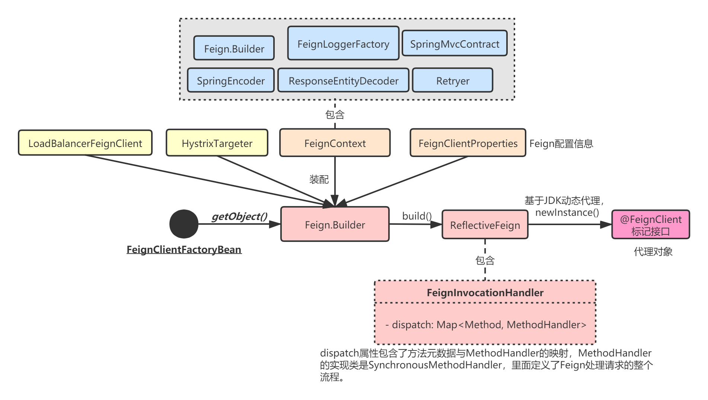

我们在使用Feign时，一般使用@Autowired注入接口，比如下面这样：
@FeignClient("ServiceA") // ServiceA就是服务A的名称
public interface ServiceAClient extends ServiceAInterface {
}
@RestController
@RequestMapping("/ServiceB/user")
public class ServiceBController {
@Autowired
private ServiceAClient serviceA;
}
但是我们自己并没有实现ServiceAClient接口，只是用@FeignClient标注了一下，Spring Cloud是如何生成FeignClient对象（也就是Feign客户端）的呢？本章，我就来讲解FeignClient的动态代理机制。
在FeignClient的动态代理机制之前，我得先讲简单一下Spring中的FactoryBean：
public interface FactoryBean<T> {
String OBJECT_TYPE_ATTRIBUTE = "factoryBeanObjectType";
// 返回的对象实例
@Nullable
T getObject() throws Exception;
// Bean的类型
@Nullable
Class<?> getObjectType();
// 是否单例
default boolean isSingleton() {
return true;
}
}
在Spring中，FactoryBean是一个工厂Bean接口，可以生成某一个类型Bean实例，它最大的一个作用是：可以让我们自定义Bean的创建过程。
我们的Bean一般都被Spring的IoC容器管理，在AbstractApplicationContext中有一个很重要的方法：refresh()，容器启动或重启时，refresh()会最终调用FactoryBean.getObject()方法。
FeignClientFactoryBean就是一个FactoryBean，用于构造一个FeignClient对象，由于我们使用了
@Autowired，所以Spring容器启动时，就会为我们构造这个对象。
Spring Cloud并没有为我们直接创建一个FeignClient客户端，而是对@FeignClient注解的接口，利用JDK动态代理创建了该注解标记接口的代理对象，这个对象内部保存了接口方法元数据与方法处理器的映射关系，所以当我们调用接口方法时，代理对象就可以根据元数据找到对象的处理逻辑类，从而实现拦截处理，加入很多Feign自己的处理流程，从而完成声明式服务调用。
整个流程我用下面这张图表述：

在上一章讲解Feign客户端配置的初始化流程中，我提到：Spring容器启动时会扫描@EnableFeignClients，最终触发FeignClientsRegistrar的Bean定义信息注入，其中有一个很重要的操作就是为每个注解了@FeignClient的接口生成一个FeignClientFactoryBean对象，并注入到容器中：
//FeignClientsRegistrar.java
// 过滤出带有@FeignClien注解的类，并注入容器
public void registerFeignClients(AnnotationMetadata metadata, BeanDefinitionRegistry registry) {
ClassPathScanningCandidateComponentProvider scanner = getScanner();
scanner.setResourceLoader(this.resourceLoader);
Set<String> basePackages;
Map<String, Object> attrs = metadata.getAnnotationAttributes(EnableFeignClients.class.getName());
AnnotationTypeFilter annotationTypeFilter = new AnnotationTypeFilter(FeignClient.class);
final Class<?>[] clients = attrs == null ? null
: (Class<?>[]) attrs.get("clients");
if (clients == null || clients.length == 0) {
scanner.addIncludeFilter(annotationTypeFilter);
basePackages = getBasePackages(metadata);
}
else {
final Set<String> clientClasses = new HashSet<>();
basePackages = new HashSet<>();
for (Class<?> clazz : clients) {
basePackages.add(ClassUtils.getPackageName(clazz));
clientClasses.add(clazz.getCanonicalName());
}
AbstractClassTestingTypeFilter filter = new AbstractClassTestingTypeFilter() {
@Override
protected boolean match(ClassMetadata metadata) {
String cleaned = metadata.getClassName().replaceAll("\\$", ".");
return clientClasses.contains(cleaned);
}
};
scanner.addIncludeFilter(
new AllTypeFilter(Arrays.asList(filter, annotationTypeFilter)));
}
for (String basePackage : basePackages) {
Set<BeanDefinition> candidateComponents = scanner.findCandidateComponents(basePackage);
for (BeanDefinition candidateComponent : candidateComponents) {
if (candidateComponent instanceof AnnotatedBeanDefinition) {
AnnotatedBeanDefinition beanDefinition = (AnnotatedBeanDefinition) candidateComponent;
AnnotationMetadata annotationMetadata = beanDefinition.getMetadata();
// @FeignClient标记的必须是接口
Assert.isTrue(annotationMetadata.isInterface(),
"@FeignClient can only be specified on an interface");
// 获取@FeignClient注解的所有属性配置
Map<String, Object> attributes = annotationMetadata .getAnnotationAttributes(
FeignClient.class.getCanonicalName());
String name = getClientName(attributes);
registerClientConfiguration(registry, name, attributes.get("configuration"));
// 关键是这里:向容器注入一个Feign客户端
registerFeignClient(registry, annotationMetadata, attributes);
}
}
}
}
// 注入FeignClientFactoryBean
private void registerFeignClient(BeanDefinitionRegistry registry,
AnnotationMetadata annotationMetadata, Map<String, Object> attributes) {
// 1.获取标注了@FeignClient的接口的全限定名
String className = annotationMetadata.getClassName();
// 2.创建FeignClientFactoryBean的BeanDefinition构造器
BeanDefinitionBuilder definition = BeanDefinitionBuilder
.genericBeanDefinition(FeignClientFactoryBean.class);
validate(attributes);
definition.addPropertyValue("url", getUrl(attributes));
definition.addPropertyValue("path", getPath(attributes));
String name = getName(attributes);
definition.addPropertyValue("name", name);
String contextId = getContextId(attributes);
definition.addPropertyValue("contextId", contextId);
definition.addPropertyValue("type", className);
definition.addPropertyValue("decode404", attributes.get("decode404"));
definition.addPropertyValue("fallback", attributes.get("fallback"));
definition.addPropertyValue("fallbackFactory", attributes.get("fallbackFactory"));
definition.setAutowireMode(AbstractBeanDefinition.AUTOWIRE_BY_TYPE);
String alias = contextId + "FeignClient";
// 3.构造出FeignClientFactoryBean的BeanDefinition对象，里面包含了@FeignClient注解的所有信息
AbstractBeanDefinition beanDefinition = definition.getBeanDefinition();
beanDefinition.setAttribute(FactoryBean.OBJECT_TYPE_ATTRIBUTE, className);
// has a default, won't be null
boolean primary = (Boolean) attributes.get("primary");
beanDefinition.setPrimary(primary);
String qualifier = getQualifier(attributes);
if (StringUtils.hasText(qualifier)) {
alias = qualifier;
}
// 4.注入到容器中，name为@FeignClient的接口全限定名
BeanDefinitionHolder holder = new BeanDefinitionHolder(beanDefinition, className,new String[] { alias });
BeanDefinitionReaderUtils.registerBeanDefinition(holder, registry);
}
也就是说，Spring Cloud并没有为我们直接创建一个FeignClient客户端，而是基于@FeignClient注解，创建了一个FeignClientFactoryBean，并注入到容器中。
我们来看下FeignClientFactoryBean的实现：
class FeignClientFactoryBean
implements FactoryBean<Object>, InitializingBean, ApplicationContextAware {
@Override
public Object getObject() throws Exception {
return getTarget();
}
<T> T getTarget() {
// FeignContext里面保存了每一个Feign客户端的独立上下文
FeignContext context = applicationContext.getBean(FeignContext.class);
// 关键：获取Feign客户端构造器
Feign.Builder builder = feign(context);
// 1.没有url：说明是与Eureka等注册中心配合使用
if (!StringUtils.hasText(url)) {
if (!name.startsWith("http")) {
url = "http://" + name;
}
else {
url = name;
}
url += cleanPath();
// 没有url注解，基于LoadBalanceFeignClient创建代理对象，type表示接口类，name就是服务名
return (T) loadBalance(builder, context,new HardCodedTarget<>(type, name, url));
}
// 2.有url，说明独立使用
if (StringUtils.hasText(url) && !url.startsWith("http")) {
url = "http://" + url;
}
String url = this.url + cleanPath();
Client client = getOptional(context, Client.class);
if (client != null) {
if (client instanceof LoadBalancerFeignClient) {
// not load balancing because we have a url,
// but ribbon is on the classpath, so unwrap
client = ((LoadBalancerFeignClient) client).getDelegate();
}
if (client instanceof FeignBlockingLoadBalancerClient) {
// not load balancing because we have a url,
// but Spring Cloud LoadBalancer is on the classpath, so unwrap
client = ((FeignBlockingLoadBalancerClient) client).getDelegate();
}
builder.client(client);
}
Targeter targeter = get(context, Targeter.class);
return (T) targeter.target(this, builder, context,
new HardCodedTarget<>(type, name, url));
}
}
protected <T> T loadBalance(Feign.Builder builder, FeignContext context,
HardCodedTarget<T> target) {
// 默认为LoadBalancerFeignClient
Client client = getOptional(context, Client.class);
if (client != null) {
builder.client(client);
// 如果项目中引入了Hystrix依赖，则Targeter为HystrixTargeter
Targeter targeter = get(context, Targeter.class);
// 创建代理对象
return targeter.target(this, builder, context, target);
}
throw new IllegalStateException(
"No Feign Client for loadBalancing defined. Did you forget to include spring-cloud-starter-netflix-ribbon?");
}
上述代码有三个关键点：
loadBalance(builder, context,new HardCodedTarget<>(type, name, url))方法创建代理对象，HardCodedTarget就是个简单的包装类，都是些GET/SET方法；FeignContext里面包含了各种Feign的组件，同时会给每个Feign客户端创建一个独立的ApplicationContext。
如果项目中引入了Hystrix依赖，则Targeter为HystrixTargeter，创建代理对象是通过它的target方法：
// HystrixTargeter.java
public <T> T target(FeignClientFactoryBean factory, Feign.Builder feign,
FeignContext context, Target.HardCodedTarget<T> target) {
if (!(feign instanceof feign.hystrix.HystrixFeign.Builder)) {
return feign.target(target);
}
feign.hystrix.HystrixFeign.Builder builder = (feign.hystrix.HystrixFeign.Builder) feign;
String name = StringUtils.isEmpty(factory.getContextId()) ? factory.getName()
: factory.getContextId();
SetterFactory setterFactory = getOptional(name, context, SetterFactory.class);
if (setterFactory != null) {
builder.setterFactory(setterFactory);
}
Class<?> fallback = factory.getFallback();
if (fallback != void.class) {
return targetWithFallback(name, context, target, builder, fallback);
}
Class<?> fallbackFactory = factory.getFallbackFactory();
if (fallbackFactory != void.class) {
return targetWithFallbackFactory(name, context, target, builder,
fallbackFactory);
}
// Feign.target()方法
return feign.target(target);
}
而这个方法内部最终调用了Feign.Builder的target方法，创建了一个ReflectiveFeign对象：
// Feign.Builder.java
public <T> T target(Target<T> target) {
return build().newInstance(target);
}
public Feign build() {
Client client = Capability.enrich(this.client, capabilities);
Retryer retryer = Capability.enrich(this.retryer, capabilities);
List<RequestInterceptor> requestInterceptors = this.requestInterceptors.stream()
.map(ri -> Capability.enrich(ri, capabilities))
.collect(Collectors.toList());
Logger logger = Capability.enrich(this.logger, capabilities);
Contract contract = Capability.enrich(this.contract, capabilities);
Options options = Capability.enrich(this.options, capabilities);
Encoder encoder = Capability.enrich(this.encoder, capabilities);
Decoder decoder = Capability.enrich(this.decoder, capabilities);
InvocationHandlerFactory invocationHandlerFactory =
Capability.enrich(this.invocationHandlerFactory, capabilities);
QueryMapEncoder queryMapEncoder = Capability.enrich(this.queryMapEncoder, capabilities);
SynchronousMethodHandler.Factory synchronousMethodHandlerFactory =
new SynchronousMethodHandler.Factory(client, retryer, requestInterceptors, logger,
logLevel, decode404, closeAfterDecode, propagationPolicy, forceDecoding);
ParseHandlersByName handlersByName =
new ParseHandlersByName(contract, options, encoder, decoder, queryMapEncoder,
errorDecoder, synchronousMethodHandlerFactory);
return new ReflectiveFeign(handlersByName, invocationHandlerFactory, queryMapEncoder);
}
我们来看下ReflectiveFeign，它包含了核心的创建动态代理对象的逻辑：
// ReflectiveFeign.java
public <T> T newInstance(Target<T> target) {
// 建立[方法签名,MethodHandler]的映射，MethodHandler包含了方法的处理逻辑，默认为SynchronousMethodHandler
Map<String, MethodHandler> nameToHandler = targetToHandlersByName.apply(target);
// 建立[方法元数据,MethodHandler]的映射
Map<Method, MethodHandler> methodToHandler = new LinkedHashMap<Method, MethodHandler>();
List<DefaultMethodHandler> defaultMethodHandlers = new LinkedList<DefaultMethodHandler>();
// 遍历接口的所有方法元数据
for (Method method : target.type().getMethods()) {
// 忽略Object类的方法
if (method.getDeclaringClass() == Object.class) {
continue;
} else if (Util.isDefault(method)) { //处理默认方法
DefaultMethodHandler handler = new DefaultMethodHandler(method);
defaultMethodHandlers.add(handler);
methodToHandler.put(method, handler);
} else {
// 处理自定义的方法
methodToHandler.put(method, nameToHandler.get(Feign.configKey(target.type(), method)));
}
}
// 3.利用JDK动态代理生成代理对象，当调用代理对象的方法时，都会被InvocationHandler拦截处理
InvocationHandler handler = factory.create(target, methodToHandler);
T proxy = (T) Proxy.newProxyInstance(target.type().getClassLoader(),
new Class<?>[] {target.type()}, handler);
for (DefaultMethodHandler defaultMethodHandler : defaultMethodHandlers) {
defaultMethodHandler.bindTo(proxy);
}
return proxy;
}
MethodHandler可以看成是一个切面，里面封装了方法的调用，在前后加上Feign自己的处理逻辑，每一个方法都对应一个MethodHandler，它的默认实现是SynchronousMethodHandler。可以看到，上面代码最重要的是两个地方：
Map<String, MethodHandler> nameToHandler = targetToHandlersByName.apply(target);，内部其实是利用Contract组件对SpringMVC注解进行处理；InvocationHandler handler = factory.create(target, methodToHandler);：创建一个用于JDK动态代理的InvocationHandler。先来看第一个方法，本质就是利用SpringMvcContract对注解做处理：
// ReflectiveFeign.java
public Map<String, MethodHandler> apply(Target target) {
// 1.基于SpringMvcContract组件，解析接口的SpringMVC注解
List<MethodMetadata> metadata = contract.parseAndValidateMetadata(target.type());
// 2.为每个接口封装一个SynchronousMethodHandler对象
Map<String, MethodHandler> result = new LinkedHashMap<String, MethodHandler>();
for (MethodMetadata md : metadata) {
BuildTemplateByResolvingArgs buildTemplate;
if (!md.formParams().isEmpty() && md.template().bodyTemplate() == null) {
buildTemplate =
new BuildFormEncodedTemplateFromArgs(md, encoder, queryMapEncoder, target);
} else if (md.bodyIndex() != null) {
buildTemplate = new BuildEncodedTemplateFromArgs(md, encoder, queryMapEncoder, target);
} else {
buildTemplate = new BuildTemplateByResolvingArgs(md, queryMapEncoder, target);
}
if (md.isIgnored()) {
result.put(md.configKey(), args -> {
throw new IllegalStateException(md.configKey() + " is not a method handled by feign");
});
} else {
// 这里是关键，Map的value是一个SynchronousMethodHandler对象
result.put(md.configKey(),
factory.create(target, md, buildTemplate, options, decoder, errorDecoder));
}
}
return result;
}
// SynchronousMethodHandler.java
public MethodHandler create(Target<?> target,
MethodMetadata md,
RequestTemplate.Factory buildTemplateFromArgs,
Options options,
Decoder decoder,
ErrorDecoder errorDecoder) {
return new SynchronousMethodHandler(target, client, retryer, requestInterceptors, logger,
logLevel, md, buildTemplateFromArgs, options, decoder,
errorDecoder, decode404, closeAfterDecode, propagationPolicy, forceDecoding);
}
可以看到所谓的MethodHandler就是个SynchronousMethodHandler对象，而SynchronousMethodHandler对象仅仅就是把Feign的各种组件封装到自己内部，这样它就可以用这些组件做大量自定义的逻辑处理了。
接着，我们重点看第二个方法：InvocationHandlerFactory.create()，它创建了一个FeignInvocationHandler对象，这个对象仅仅对Map<Method, MethodHandler> methodToHandler进行了包装：
public interface InvocationHandlerFactory {
InvocationHandler create(Target target, Map<Method, MethodHandler> dispatch);
interface MethodHandler {
Object invoke(Object[] argv) throws Throwable;
}
// 默认Factory实现
static final class Default implements InvocationHandlerFactory {
@Override
public InvocationHandler create(Target target, Map<Method, MethodHandler> dispatch) {
return new ReflectiveFeign.FeignInvocationHandler(target, dispatch);
}
}
}
// FeignInvocationHandler.java
public class ReflectiveFeign extends Feign {
static class FeignInvocationHandler implements InvocationHandler {
private final Target target;
// 拦截器，其实就是个map，通过调用的方法元数据，就可以找到对应的方法处理器
private final Map<Method, MethodHandler> dispatch;
FeignInvocationHandler(Target target, Map<Method, MethodHandler> dispatch) {
this.target = checkNotNull(target, "target");
this.dispatch = checkNotNull(dispatch, "dispatch for %s", target);
}
}
最终，使用JDK动态代理，创建出一个代理对象：
InvocationHandler handler = factory.create(target, methodToHandler);
T proxy = (T) Proxy.newProxyInstance(target.type().getClassLoader(),
new Class<?>[] {target.type()}, handler);
我们可以想像，对代理对象的接口调用都会交给InvocationHandler去处理，而InvocationHandler内部保存了接口元数据和方法处理逻辑的映射，所以自然能够通过自定义的MethodHandler拦截方法调用，做一些Feign自己的处理了。
本章，我针对FeignClient的动态代理核心机制进行了讲解。Spring Cloud为每个Feign客户端生成了FactoryBean对象，用于创建代理类。而实际创建时，则是Feign利用了大量反射方法就@FeignClient标记的接口做了处理，最终生成[方法元数据, 方法处理器]这样一个映射关系表，然后利用了JDK的动态代理机制，生成了代理对象。